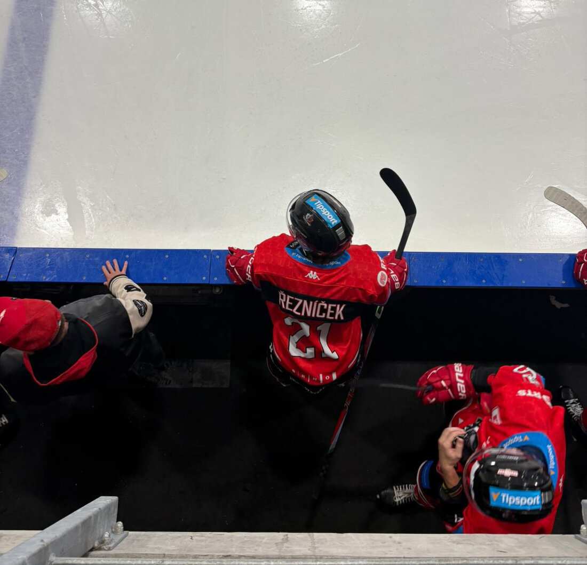

2025 — present
Vysoké učení technické v Brně — Fakulta informačních technologií
Bachelor's programme in Information Technology, currently in 2nd semester.
DRAWING NO. 001 / PORTFOLIO
CS student · developer · hockey player
scroll ↓I'm a Computer Science student at FIT BUT in Brno, currently in my second semester. I grew up in Zlín, where I also played hockey, and moved to Brno for university.
I didn't really do any programming in high school, I had no idea what I wanted to do back then. I picked it up here at FIT, mostly through C, and I like figuring out how things actually work under the hood. That's also why I switched to Linux a while back.
Outside of school I play for the VUT Cavaliers in the university league, so hockey has stayed a pretty constant thing for me even after moving. When I'm not at school or on the ice, I'm usually playing a good story driven game.
2025 — present
Bachelor's programme in Information Technology, currently in 2nd semester.
2021 — 2025
General gymnasium with a strong focus on foreign languages. Graduated in 2025.
2012 — 2021
Standard nine-year primary school where I started playing hockey.
Most of what I know comes from coursework — low-level C in IZP, IJC and IOS, formal logic in IZLO, and HTML and CSS from ITW.
C is my main one — picked it up here in my first semester. HTML and CSS I've only been at for a little while, and I've used Shell on a few school projects.
VS Code feels simple and works with pretty much anything. I enjoy using Git and like having all my projects in one place on GitHub.
I switched to Linux because it's easier for coding, looks way better than Windows and has way fewer bugs. Fedora just looked the best out of the distros I tried.
PROJECT NO. 001
Simulates a car navigation's virtual keyboard. Given a list of addresses and a typed prefix, it prints either the matching address or the next allowed keys.
view source →PROJECT NO. 002
Groups network flows into clusters using single-linkage clustering, with a weighted distance over four flow features.
view source →PROJECT NO. 003
Two C programs - a Sieve of Eratosthenes finding primes via a custom bit-array module, and a C-comment remover written as a finite state machine.
view source →PROJECT NO. 004
A C clone of the POSIX tac utility, and a C rewrite of a simple C++ word-frequency
program built around a custom hash-table library (static and dynamic variants).
PROJECT NO. 005
A POSIX shell script that analyzes web server logs — filters records by date, IP or URI and prints lists or ASCII histograms.
view source →PROJECT NO. 006
Solves the "Roller Coaster" synchronization problem from The Little Book of Semaphores in C, using processes, shared memory and POSIX semaphores to coordinate a dispatcher, carts and visitors.
view source →PROJECT NO. 007
Encodes operating-system deadlock conditions in first-order predicate logic using SMT-LIB and checks them with the Z3 solver.
view source →I have been playing ice hockey since I was a kid. It teaches you discipline, teamwork and how to keep going when you are tired — useful skills off the rink too.

Gaming is how I unwind after coding. I enjoy a mix of competitive and story-driven titles — it is also a fun way to keep in touch with friends.
I enjoy a good film at the end of the day — anything from quiet indie dramas to loud sci-fi blockbusters. A solid story beats fancy effects every time.